Main Weapons
Main weapons are the starting weapons in Glyphica and play a central role in gameplay. When you type a word displayed above an enemy, the main weapon locks onto that enemy as its target. Each main weapon has unique effects and mechanics, requiring different strategies to use effectively.
While some main weapons emphasize typing speed (WPM), others demand a more tactical approach. Like other weapons in the game, main weapons can be upgraded and evolved, enhancing their abilities and effectiveness as you progress.
List of Main Weapons
WiederholerHitzestrahlSperrfeuerWiederholer
Tags: Kinetisch , Haupt
Verheerende Waffe, die eine Reihe von Kugeln in kurzen Stößen abfeuert.
Evolutions
Name |
Description |
| Frostzahn |
Effekte:
Kälteschaden: +10
Einfrierchance: 3%
Wirkt auf den Grundschaden und wird von Kälteschadensmodifikatoren beeinflusst. |
| Frostzahn II |
Effekte:
Kälteschaden: +20
Kinetischer Schaden: -10
Wirkt auf den Basisschaden. |
| Querschläger |
Effekte:
Projektilkette: 3
Wiederholungsprojektile prallen an zufälligen Zielen in der Nähe ab und verursachen bei Treffern nach dem ersten 50% Schaden. |
| Abprall II |
Effekte:
Projektilkette: +2 |
| Schrotflinte |
Effekte:
Projektilanzahl: +5
Projektilverteilung: +400%
Kinetischer Schaden: -10
Wiederholer feuert jetzt ein Bündel schwächerer Projektile mit großer Streuung ab. Der Schadensmodifikator beeinflusst den Grundschaden. |
| Schrotflinte II |
Effekte:
Projektilanzahl: +5
Projektilverteilung: +100% |
Upgrades
Name |
Description |
| Verstärktes Lernen |
Entwicklung: +10 Kills |
| Kampfdaten |
Entwicklung: +20 Kills |
| Adeptische Lehre |
Entwicklung: +30 Kills |
| Volle Metalljacke |
Schaden: +10% |
| Panzerbrechendes Upgrade |
Schaden: +20% |
| Penetrator Verbesserung |
Schaden: +30% |
| Fortgeschrittenes Targeting |
Kritische Chance: +1%
Kritischer Schaden: +50% |
| Präzisions-Leitsystem |
Kritische Chance: +2%
Kritischer Schaden: +100% |
| Adlerauge-Integration |
Kritische Chance: +3%
Kritischer Schaden: +200% |
Hitzestrahl
Tags: Hitze, Haupt, Schäden im Laufe der Zeit
Feuert einen konstanten Strahl aus unglaublich präzisem, konzentriertem Licht ab, der mit der Zeit Schaden anrichtet.
Evolutions
Name |
Description |
| Eisstrahl |
Effekte:
Hitzeschaden: -25
Kälteschaden: +25
Einfrierchance: 8%
Wirkt sich auf den Basisschaden aus. Der Schadenstyp Hitzestrahl wird zu Kälte und hat eine erhöhte Chance, Einfrieren zu bewirken. |
| Eisstrahl II |
Effekte:
Kälteschaden: +20
Wirkt auf den Grundschaden. |
| Reflexion |
Hitzestrahl geht jetzt durch Feinde hindurch und reflektiert 2x vom Bildschirmrand. |
| Reflexion II |
Wärmestrahl reflektiert jetzt 4x vom Bildschirmrand. |
| Doppelladig |
Ein weiterer Strahl feuert in die entgegengesetzte Richtung. Alle Weiterentwicklungen und Upgrades gelten für beide Strahlen. |
Upgrades
Name |
Description |
| Fusionskern |
Entwicklung: +10 Kills |
| Urgewaltige Flamme |
Entwicklung: +20 Kills |
| Apokalyptisches Inferno |
Entwicklung: +30 Kills |
| Wilde Flamme |
Schaden: +10% |
| Intensive Hitze |
Schaden: +20% |
| Kataklysmischer Ausbruch |
Schaden: +30% |
| Annäherung |
Dicke des Strahls: +20%
(Reichweite) |
| Strahlkraft |
Dicke des Strahls: +40%
(Reichweite) |
| Strahlenschmiede |
Dicke des Strahls: +60%
(Reichweite) |
| Schnelle Entzündung |
Feuerrate: +10% |
| Rasende Geschwindigkeit |
Feuerrate: +20% |
| Höllische Woge |
Feuerrate: +30% |
Sperrfeuer
Tags: Explosiv , Haupt
Feuert eine Reihe von explosiven Raketen auf ein Ziel und dessen Umgebung. Lädt sich mit der Zeit wieder auf.
Evolutions
Name |
Description |
| Raketenfeld |
Sperrfeuer feuert jetzt 3 - 6 Raketen pro Munitionsleiste statt 2 - 5. |
| Raketenfeld II |
Sperrfeuer feuert jetzt 4 - 7 Raketen pro Munitionsleiste statt 3 - 6. |
| Seismische Munition |
Raketen verankern sich im Boden, anstatt zu explodieren, und erzeugen in den nächsten Sekunden explosive Impulse. |
| Seismische Munition II |
Effekte:
Reichweite: 25%
Dauer: 25% |
| Nachschub: |
Es spawnen nun Nachschub-Pickups. Wenn du diese Pickups aktivierst, lädst du deine Hauptwaffe vollständig nach und erhältst einen Schadensschub von 30% für den nächsten Schuss. |
| Nachschub II |
Vorratspickups gewähren jetzt auch 30% Explosionsreichweitenverstärkung für den nächsten Schuss. |
Upgrades
Name |
Description |
| Überragendes Sperrfeuer |
Entwicklung: +10 |
| Ultimative Belagerung |
Entwicklung: +20 |
| Apokalyptische Salve |
Entwicklung: +30 |
| Aufprall-Stoß |
Schaden: +10% |
| Verheerender Schlag |
Schaden: +20% |
| Kataklysmische Explosion |
Schaden: +30% |
| Erweiterte Reichweite |
Reichweite: +10% |
| Weitreichende Nutzlast |
Reichweite: +20% |
| Weitwinkelangriff |
Reichweite: +30% |
| Schnelles Nachladen |
Geschwindigkeit des Nachladens: +10% |
| Schnelle Nachschubversorgung |
Geschwindigkeit des Nachladens: +20% |
| Schnelles Nachladen |
Geschwindigkeit des Nachladens: +30% |
Level-Up Weapons
Level-up weapons are obtained during a run as you level up. Once selected, the weapon is added to your arsenal. Each weapon has a unique activation method, but most can be triggered through typing and targeting with the main weapon.
A maximum of four weapons can be obtained this way. Once a weapon is added to your arsenal, its upgrades become available in the level-up upgrade pool, allowing you to enhance its abilities as you progress.
List of Level-Up Weapons
GespenstWacheTesla-MineOszillatorMeteoritJägerHäckslerMinenfeldKlingenfalleGespenst
Tags: Kinetisch , Drohne
Vervollständigung von Wörtern, die die Glyphen enthalten a, e, o Bringt schnelle Nahkampfdrohnen hervor, die der Anzahl der oben genannten entsprechen.
Evolutions
Name |
Description |
| Supergeladen |
Jeder 20. gespawnte Spektre ist ein SUPER-Spektre.
Super-Spektren:
+100% Schaden
+50% Dauer
+50% Geschwindigkeit |
| Selbstzerstörung |
Effekte:
Explosionsschaden: +50
Wenn das Gespenst abläuft, zerstört es sich selbst und verursacht Explosionsschaden. Wirkt sich auf den Grundschaden aus und wird von Explosivschaden-Modifikatoren beeinflusst. |
| Selbstzerstörung II |
Effekte:
Explosionsschaden: +50
Reichweite: +30%
Wirkt auf den Grundschaden. |
| Flüchtiger Brennstoff |
Effekte:
Geschwindigkeit: +50% |
| Flüchtiger Treibstoff II |
Effekte:
Geschwindigkeit: 50%
Dauer: -25% |
Upgrades
Name |
Description |
| Geisterhafte Erkenntnisse |
Entwicklung: +10 Kills |
| Spektrales Fachwissen |
Entwicklung: +20 Kills |
| Phantasmagorie |
Entwicklung: +30 Kills |
| Schwarmtaktik |
Schaden: +10% |
| Koordinierter Angriff |
Schaden: +20% |
| Schwarmgeist-Strategie |
Schaden: +30% |
| Ricodium-Batterien |
Dauer: +10% |
| Energetisierte Zellen |
Dauer: +20% |
| Überladung des Energiekerns |
Dauer: +30% |
| Selbstmontage |
Wenn du ein Wort mit einer Länge von mehr als 7 Glyphen vervollständigst, wird ein zusätzliches Gespenst erzeugt. |
Wache
Tags: Hitze, Turm
Setze einen automatischen Geschützturm ein, der auf jeden Feind feuert, der in Reichweite kommt.
Evolutions
Name |
Description |
| Verteidigungsgitter |
Effekte:
Geschützturm: +1 |
| Solider Kern |
Effekte:
Kinetischer Schaden: +10
Blutungsgefahr: 3%
Wirkt auf den Grundschaden und wird von Modifikatoren für kinetischen Schaden beeinflusst. |
| Fester Kern II |
Effekte:
Kinetischer Schaden: +20
Hitzeschaden: -10
Wirkt auf den Basisschaden. |
| Notfall-Protokoll |
Immer wenn ein Schild-Powerup zerstört wird, wechselt die Wache für 10 Sekunden in den Notfallprotokoll-Modus.
Während des Notfallprotokolls:
Reichweite: +50%
Feuerrate: +100% |
| Notfallprotokoll |
Während des Notfallprotokolls:
Schaden: +50%
Rotationsgeschwindigkeit: +50% |
Upgrades
Name |
Description |
| Scharfer Beobachter |
Entwicklung: +10 Kills |
| Wachsamer Wächter |
Entwicklung: +20 Kills |
| Ewige Überwacher |
Entwicklung: +30 Kills |
| Haar-Auslöser |
Feuerrate: +10% |
| Schnellfeuer-Beschleuniger |
Feuerrate: +20% |
| Blitz-Protokoll |
Feuerrate: +30% |
| Panzerbrechende Kugeln |
Schaden: +10% |
| Taktische Panzershredder |
Schaden: +20% |
| Exo-Penetrationsmunition |
Schaden: +30% |
| Vergrößerte Optik |
Reichweite: +10% |
| Verbesserte Zielfernrohre |
Reichweite: +20% |
| Präzisions-Visiersysteme |
Reichweite: +30% |
Tesla-Mine
Tags: Elektrisch, Turm, Schäden im Laufe der Zeit
Vervollständigung von Wörtern, die mit Glyphen beginnen b, c, d, e Setzt einen elektrischen Geschützturm ein, der mit der Zeit Schaden verursacht.
Evolutions
Name |
Description |
| Üppige Spulen |
Spawnen zusätzlich zu den bestehenden Glyphen eine Tesla-Mine. |
| Elektrische Verbrennung |
Effekte:
Hitzeschaden: +4
Entzündungs-Chance: 3%
Wirkt auf den Grundschaden und wird von Hitzeschadensmodifikatoren beeinflusst. |
| Elektrische Verbrennung II |
Effekte:
Hitzeschaden: +8
Elektrischer Schaden: -4
Wirkt auf den Basisschaden. |
| Eingeschränktes Gebiet |
Feinde in der Reichweite von Tesla-Mine haben eine um 20% erhöhte Chance, von elektrischen Schadensquellen den Status Statisch zu erhalten. |
| Eingeschränktes Gebiet II |
Der statische Schaden wird um 5 und die Reichweite um 30% erhöht. Dies gilt für Statik, die von allen Quellen zugefügt wird, und wirkt sich auf den Grundschaden aus. |
Upgrades
Name |
Description |
| Leitfähige Meisterschaft |
Entwicklung: +10 Kills |
| Spannungs-Expertise |
Entwicklung: +20 Kills |
| Amplifikatorium |
Entwicklung: +30 Kills |
| Verstärkte Spulen |
Dauer: +10% |
| Widerstandsfähige Leiter |
Dauer: +20% |
| Hypergeladene Induktion |
Dauer: +30% |
| Überladung |
Schaden: +10% |
| Spannungsschwankung |
Schaden: +20% |
| Sturm-Verstärkung |
Schaden: +30% |
| Verstärktes Feld |
Reichweite: +10% |
| Horizont-Reichweite |
Reichweite: +20% |
| Infinitum |
Reichweite: +30% |
| Statische Welle |
Statische Chance: +1% |
| Dunkle Konduktion |
Statische Chance: +3% |
| Voltaische Überladung |
Statische Chance: +5% |
Oszillator
Tags: Hitze, Ferngesteuert
Feuere einen oszillierenden Partikelstrom in Richtung deines letzten Ziels.
Evolutions
Name |
Description |
| Doppelköpfig |
Ein zusätzlicher Strom von Oszillator-Geschossen wird in die entgegengesetzte Richtung abgefeuert. |
| Kugelblitz |
Effekt:
Elektrischer Schaden: +3
Statische Chance: 3%
Wirkt auf den Grundschaden und wird von Elektroschadensmodifikatoren beeinflusst. |
| Kugelblitz II |
Effekt:
Elektrischer Schaden: +6
Hitzeschaden: -3
Wirkt sich auf den Grundschaden aus. |
| Stabilisiertes Plasma |
Oszillator-Projektile durchdringen jetzt Gegner. Feinde, die nach dem ersten Treffer getroffen werden, erleiden 50% Schaden. |
| Stabilisiertes Plasma II |
Der Entzündungsschaden wird um 5 erhöht. Dies gilt für Entzündung, die von allen Quellen verursacht wird, und beeinflusst den Grundschaden. |
Upgrades
Name |
Description |
| Präzisionsharmonik |
Entwicklung: +10 Kills |
| Adaptiver Resonator |
Entwicklung: +20 Kills |
| Wellenforma |
Entwicklung: +30 Kills |
| Plasma-Zündung |
Schaden: +10% |
| Quanten-Entladung |
Schaden: +20% |
| Nova-Eruption |
Schaden: +30% |
| Teppichbombardierung |
Ausbreitung: +10% |
| Orbische Reichweite |
Ausbreitung: +20% |
| Quantenexpansion |
Ausbreitung: +30% |
| Kritischer Fokus |
Kritische Chance: +1%
Kritische Mult: +50% |
| Präzisionswelle |
Kritische Chance: +2%
Kritische Mult: +100% |
| Quanten-Welle |
Kritische Chance: +3%
Kritische Mult: +200% |
Meteorit
Tags: Explosiv , Ferngesteuert
Bringt in regelmäßigen Abständen Zielmarkierungen an zufälligen Orten hervor, die aktiviert werden können, um ein orbitales Bombardement zu starten.
Evolutions
Name |
Description |
| Überwachung: |
Meteor hat jetzt zwei Zieloptionen statt nur einer. |
| Überwachung II |
Meteor erhält drei Zieloptionen anstelle von zwei. |
| Eisregen |
Effekte:
Explosionsschaden: -60
Kälteschaden: +20
Einfrierchance: 20%
Wirkt auf den Basisschaden und wird von Kälteschadensmodifikatoren beeinflusst. |
| Eisregen II |
Effekte:
Kälteschaden: +20
Einfrier-Chance: +20% |
| Unerbittlich |
Effekte:
Reichweite: -50%
Feuerrate: -50%
Meteore feuern nun kontinuierlich und bewegen sich auf das letzte Ziel zu. |
| Unerbittlich II |
Effekte:
Geschwindigkeit: +50%
Kritische Chance: +10% |
Upgrades
Name |
Description |
| Eifrige Besatzung |
Entwicklung: +10 Kills |
| Orbitale Einsicht |
Entwicklung: +20 Kills |
| Veteranen-Sucher |
Entwicklung: +30 Kills |
| Präzisionsbombardierung |
Schaden: +10% |
| Impact Enhancer |
Schaden: +20% |
| Apokalypse |
Schaden: +30% |
| Relais Beschleuniger |
Spawnrate: +10% |
| Sequenzer starten |
Spawnrate: +20% |
| Regen des Todes |
Spawnrate: +30% |
| Longshot-Modul |
Reichweite: +10% |
| Verstärkungsanordnung |
Reichweite: +20% |
| Kataklysmische Reichweite |
Reichweite: +30% |
Jäger
Tags: Elektrisch, Drohne, Schäden im Laufe der Zeit
Vervollständigung von Wörtern, die die Glyphen enthalten i, o, u Bringt elektrische Strahlen feuernde Drohnen hervor, die der Anzahl der oben genannten entsprechen.
Evolutions
Name |
Description |
| Jäger-Elite |
Jeder 12. gespawnte Jäger ist eine Jäger-Elite.
Jäger-Eliten:
+100% Schaden
+50% Dauer
+50% Geschwindigkeit
+50% Reichweite |
| Elektrisierte Bolzen |
Effekte:
Kinetischer Schaden: +5
Chance auf Blutung: 3%
Jäger feuern jetzt Projektile statt elektrischer Ströme. Wirkt sich auf den Grundschaden aus und wird von Modifikatoren für kinetischen Schaden beeinflusst. |
| Elektrisierte Bolzen II |
Effekte:
Kinetischer Schaden: +10
Elektrischer Schaden: -5
Wirkt sich auf den Grundschaden aus. |
| Kettenblitz |
Die Angriffe des Jägers ketten sich nun an 1 zusätzlichen Gegner in der Nähe. |
| Kettenblitz II |
Angriffe des Jägers ketten sich nun an 2 zusätzliche Gegner in der Nähe. |
Upgrades
Name |
Description |
| Geschärfter Fokus |
Entwicklung: +10 Kills |
| Schock-Präzision |
Entwicklung: +20 Kills |
| Raubtier |
Entwicklung: +30 Kills |
| Elektrischer Stromstoß |
Schaden: +10% |
| Squall-Intensivierer |
Schaden: +20% |
| Quanten-Überladung |
Schaden: +30% |
| Fokussierter Strahl |
Reichweite: +10% |
| Gezielte Entladung |
Reichweite: +20% |
| Blitz-Kaskade |
Reichweite: +30% |
| Energie-Effizienz |
Dauer: +10% |
| Optimierte Zerstörung |
Dauer: +20% |
| Ewige Matrix |
Dauer: +30% |
Häcksler
Tags: Kinetisch , Ferngesteuert
Erzeugt beim Abfeuern der Hauptwaffe eine massive, sich drehende Klinge, die sich bis zum Bildschirmrand bewegt und alle Gegner in ihrem Weg beschädigt.
Evolutions
Name |
Description |
| Doppelter Schwinger |
Effekt:
+1 Häcksler |
| Flammende Klingen |
Effekt:
Hitzeschaden: +7
Entzündungs-Chance: +3%
Wirkt auf den Grundschaden und wird von Hitzeschadensmodifikatoren beeinflusst. |
| Flammende Klingen II |
Wirkung:
Hitzeschaden: +14
Kinetischer Schaden: -7
Wirkt auf den Grundschaden. |
| Bumerang |
Zerhacker reist nun zurück zur Hauptwaffe, nachdem er den Bildschirmrand erreicht hat. |
| Bumerang II |
Effekte:
Geschwindigkeit: +75%
Feuerrate: +50% |
Upgrades
Name |
Description |
| Schärfgerät |
Entwicklung: +10 Kills |
| Fachwissen über Einschnitte |
Entwicklung: +20 Kills |
| Guillotine |
Entwicklung: +30 Kills |
| Geschärfte Schneiden |
Schaden: +10% |
| Gehärtete Klinge |
Schaden: +20% |
| Rasierklinge |
Schaden: +30% |
| Rotor-Verbesserungen |
Spin-Rate: +10% |
| Turbo-Rotation |
Spin-Rate: +20% |
| Hyperdrive-Rotoren |
Spin-Rate: +30% |
| Verlängerte Klingen |
Reichweite: +10% |
| Erweiterte Reichweite |
Reichweite: +20% |
| Meister der großen Reichweite |
Reichweite: +30% |
| Rasiermesserschärfe |
Chance auf Blutungen: +1% |
| Blutbrief |
Chance auf Blutungen: +3% |
| Seration |
Chance auf Blutungen: +5% |
Minenfeld
Tags: Explosiv , Drohne
Vervollständigung von Wörtern, die mit Glyphen beginnen f, g, h, i Bringt langsam bewegte Minen hervor, die bei Kontakt mit Feinden explodieren.
Evolutions
Name |
Description |
| Minenleger |
spawnen jetzt auch Minen zusätzlich zu den bestehenden Glyphen. |
| Aufguss |
Effekte:
Chemischer Schaden: +20
Verderbnis-Chance: 10%
Wirkt auf den Grundschaden und wird von chemischen Schadensmodifikatoren beeinflusst. |
| Aufguss II |
Effekte:
Chance auf Brandschaden: +10%
Explosionsschaden: -50
Wirkt auf den Grundschaden. |
| Jäger Sucher |
Effekte:
Geschwindigkeit: +200%
Reichweite: -50%
Minen erhalten eine zielsuchende Bewegung auf zufällige Ziele. |
| Jäger Sucher II |
Effekte:
Gesprengte Minen: +1
Geschwindigkeit: +100% |
Upgrades
Name |
Description |
| AI-Sprengkapsel |
Entwicklung: +10 Kills |
| Präzisionsballistik |
Entwicklung: +20 Kills |
| Zerstörer |
Entwicklung: +30 Kills |
| Nutzlastverstärker |
Schaden: +10% |
| Schwere Munition |
Schaden: +20% |
| Sprengkopf-Verstärkung |
Schaden: +30% |
| Erweiterung der Reichweite |
Reichweite: +10% |
| Schlachtfeld-Abdeckung |
Reichweite: +20% |
| Unbegrenzter Radius |
Reichweite: +30% |
| Schneller Fabriker |
1 Gesprengte Mine |
Klingenfalle
Tags: Kinetisch , Turm
Vervollständigung von Wörtern, die mit Glyphen beginnen p, k, l, m Setzt eine sich drehende vierspeichige Klingenfalle ein.
Evolutions
Name |
Description |
| Klingen-Repository |
erzeugt zusätzlich zu den bestehenden Glyphen eine Klingenfalle. |
| Giftige Beschichtung |
Effekte:
Chemischer Schaden: +5
Verderbnis-Chance: 10%
Wirkt auf den Grundschaden und wird von chemischen Schadensmodifikatoren beeinflusst. |
| Giftmantel II |
Effekte:
Chemischer Schaden: 5+
Verderbnis-Chance: +5%
Wirkt auf den Grundschaden. |
| Sägezahnklingen |
Klingenfallen addieren ihre Kritische Chance zu ihrer Chance, Blutungen zu verursachen. |
| Sägezahnklingen II |
Der Blutungsschaden wird um 5 erhöht. Dies gilt für Blutungen aus allen Quellen und beeinflusst den Grundschaden. |
Upgrades
Name |
Description |
| Verfeinerte Schlinge |
Entwicklung: +10 Kills |
| Reaktiver Wirbel |
Entwicklung: +20 Kills |
| Schnürer |
Entwicklung: +30 Kills |
| Gehärtete Messer |
Schaden: +10% |
| Titan-Schneiden |
Schaden: +20% |
| Diamant-Schneiden |
Schaden: +30% |
| Geschmierte Zahnräder |
Drehrate: +10% |
| Präzisionszahnräder |
Drehrate: +20% |
| Quantum-Getriebe |
Drehrate: +30% |
| Verbessertes Uhrwerk |
Dauer: +10% |
| Fehlerfreies Uhrwerk |
Dauer: +20% |
| Ricodium-Ladegeräte |
Dauer: +30% |
Enemies
Enemies in Glyphica are procedurally spawned based on an internal metric called threat, which increases as the run progresses. In Trial Mode, the threat is multiplied by the current Trial Level, making each level progressively harder. In Endless Mode, the threat is compared to an adaptive scaling system based on the player's level, with the higher value determining the spawn difficulty.
Enemies are also categorized into specials and elites, each with its own class cap that limits their spawn rate within the overall threat level.
List of Enemies
DroneShield DroneStalkerShooterSplitterWarderSwarmerDrone
Drones are enemies that relentlessly move toward your main weapon. They can occasionally appear in two enhanced forms:
Enlarged: Triples their health, making them harder to defeat.
Hastened: Doubles their movement speed, increasing the urgency to eliminate them.
List of Variants
| Image |
Description |
| 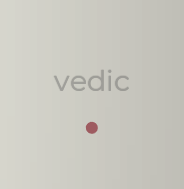 |
Leben: 80
Schaden: 40
|
|
Leben: 200
Schaden: 60
|
| 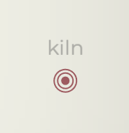 |
Leben: 500
Schaden: 90
|
|
Leben: 1000
Schaden: 120
|
|
Leben: 1600
Schaden: 150
|
|
Leben: 2600
Schaden: 180
|
| 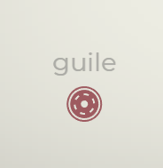 |
Leben: 4000
Schaden: 210
|
Shield Drone
The Shield Drone is a variant of the Drone enemy that features a regenerating shield. It has two health bars: the top one represents the shield, which begins to regenerate if it does not take damage for a certain period.
List of Variants
| Image |
Description |
| 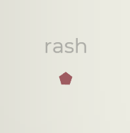 |
Leben: 100
Schild: 200
Schaden: 50
|
|
Leben: 200
Schild: 400
Schaden: 100
|
| 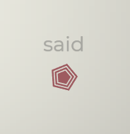 |
Leben: 400
Schild: 800
Schaden: 150
|
| 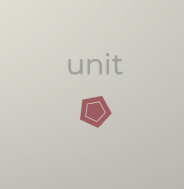 |
Leben: 800
Schild: 1600
Schaden: 200
|
| 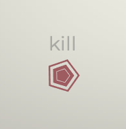 |
Leben: 1600
Schild: 3200
Schaden: 250
|
Stalker
The Stalker is a variant of the Drone enemy that initially appears with most of its word hidden. As you type, the word gradually reveals itself, requiring careful attention and quick typing to eliminate.
List of Variants
| Image |
Description |
| 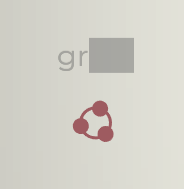 |
Leben: 400
Schaden: 80
|
| 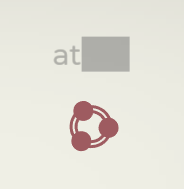 |
Leben: 800
Schaden: 120
|
|
Leben: 4800
Schaden: 160
|
| 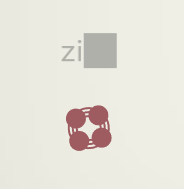 |
Leben: 3200
Schaden: 200
|
Shooter
The Shooter is an enemy that halts at the edge of the level and continuously fires durable projectiles toward your main weapon until it is destroyed.
List of Variants
| Image |
Description |
|
Leben: 300
Schaden: 25
|
|
Leben: 600
Schaden: 25
|
|
Leben: 1200
Schaden: 25
|
Splitter
The Splitter initially appears as a single enemy but is actually composed of multiple parts. When one part is destroyed, the Splitter loses its integrity, causing its components to break apart and become individual enemies.
List of Variants
| Image |
Description |
|
Shard Count: 4
Shard Health: 350
Shard Damage: 40
|
 |
Shard Count: 5
Shard Health: 500
Shard Damage: 40
|
|
Shard Count: 6
Shard Health: 650
Shard Damage: 40
|
Warder
The Warder is an elite enemy that appears in the late game. It features a revolving shield that blocks damage from the direction the shield is currently facing. Additionally, while the Warder is alive, it provides a protective aura to nearby enemies, making them invulnerable until the Warder is defeated.
List of Variants
| Image |
Description |
| 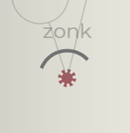 |
Leben: 300
|
Swarmer
The Swarmer is an elite enemy that periodically launches groups of smaller enemies toward the main weapon. It continues to do so until it is destroyed.
List of Variants
| Image |
Description |
| 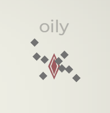 |
Leben: 2000
|
Loot Items
Loot items are obtained during a run by activating a treasure chest pickup. A randomized selection of loot items will be displayed, and choosing one grants a passive bonus that remains active for the rest of the run.
Loot items are categorized as common, uncommon, and rare, which determine their likelihood of appearing in loot selections. Defeating a boss in Trial Mode rewards a treasure chest containing only rare items.
List of Rare Loot
Name |
Description |
| Geschworen |
Gespawnte Drohnen: +1
Alle Drohnenwaffen:
Dauer: -75% |
| Plündern |
1 Beute Option |
| Mehrfachzieleinrichtung |
Alle Fernkampfwaffen erhalten +1% kritische Chance für jede Waffe, die du besitzt. |
| Riesiger Magnet |
Du sammelst automatisch Pickups ein, wenn sie ablaufen. |
| Einfrieren |
Globaler Effekt - zählt nicht als Waffe.
Feinde erleiden beim Einfrieren Schaden über Zeit. |
| Nekrobombe |
Wenn du einen Feind mit explosivem Krit-Schaden vernichtest, löst du eine Reihe von Explosionen um die Position des gefallenen Feindes herum aus. |
| Preis |
Bei der Zerstörung eines Gegners mit kritischem Schaden besteht eine Chance von 30%, dass Wiederholungsrollen, Schilde oder Lebenspunkte aufgesammelt werden. |
| Nachbeben |
Kritischer Schaden führt immer zu einem Statuseffekt. |
| Vampirismus |
Erhalte Gesundheit in Höhe von 5% des kinetischen Kritischen Schadens. |
| Weisheit |
Wenn du Schild aufnimmst, erhältst du 10 Kills auf alle Waffenentwicklungen. |
| Narr |
Wenn du „Neu würfeln“ aufnimmst, fügst du allen Gegnern auf dem Bildschirm eine zufällige Menge Schaden zwischen 0 und 100 zu. |
| Letzter Stand |
Wenn der Schild zerstört wird, besteht eine Chance von 30%, doppelten Schaden zu erleiden. |
| Dreifacher Schaden |
Während „Doppelter Schaden“ ist jeder „Doppelter Schaden“-Pickup, der gespawnt hätte, stattdessen ein „Dreifacher Schaden“. |
| Fraktur |
Während des Einfrierens wird jeder Einfrier-Pickup, der gespawnt hätte, zu einem Bruch, der allen eingefrorenen Gegnern Schaden zufügt. |
| Asket |
Wenn ihr den Beutebildschirm verlasst, erhaltet ihr 20 Sekunden lang +10% Schaden für jede ungenutzte Wiederholungsrolle. |
| Einweihung |
Neu erworbene Waffen erhalten automatisch eine Evolutionsstufe. |
| Unsterblichkeit |
Wenn deine Hauptwaffe kurz davor ist, zerstört zu werden, wird sie stattdessen auf 1 Lebenspunkt reduziert. Diese Fähigkeit kann nur einmal alle 2 Minuten eingesetzt werden. |
| Erleuchtung |
Wenn du einen Feind mit kritischem Schaden vernichtest, erhältst du +5 Kills auf Waffenentwicklung. |
| Näher |
Das Vervollständigen eines gegnerischen Wortes, nachdem es zerstört wurde, gibt +10% Schaden für 10 Sekunden. Stacks bis zu 3 mal. |
| Mörderisch |
All Drohnenwaffen: +50% Verdammnis |
| Scharfrichter |
Alle Turmwaffen: +50% Schaden |
| Degenerierung |
Alle Fernwaffen: +50% Schaden |
List of Uncommon Loot
Name |
Description |
| Scharfschützen |
Feinde, die in der Nähe der Hauptwaffe getroffen werden, erleiden +20% Schaden. |
| Verschlimmerung |
Alle Waffen:
Status Chance: +2% |
| Kryotechnik |
Eingefrorene Pickups:
Abwurf-Chance: +3%
Pickups mit doppeltem Schaden:
-100% Abwurfchance |
| Kriegerisch |
Doppelte Schaden-Pickups:
Abwurfchance: +3%
Eingefrorene Pickups:
-100% Abwurfchance |
| Pinata |
Alle Waffen:
Beuteabwurf-Chance: +2%
Chance auf:
Längeres Wort: +20% |
| Glaskanone |
Alle Waffen:
Schaden: +30%
Hauptwaffe:
Maximale Leben: -50% |
| Regeneration |
Keine Lebenspunkte mehr.
Stattdessen heilt ihr 10% eurer maximalen Leben, wenn ihr auflevelt oder Beute einsammelt. |
| Gebrechen |
D.O.T.-Waffen können kritisch sein. |
| Zerschmettern |
Alle kinetischen Waffen erhalten +5% kritische Trefferchance gegen gefrorene Gegner. |
| Seher |
Das Aktivieren von „Neu würfeln“ erhöht deine globale Reichweite 10 Sekunden lang um 10%. Kann bis zu 3 Mal gestapelt werden. |
| Unverwüstlichkeit |
Das Aktivieren von Schildaufsammlungen erhöht deine globale Dauer 10 Sekunden lang um 10%. Kann bis zu 3 Mal gestapelt werden. |
| Glücksspieler |
Erhöht den Maximalwert für Wiederholungswürfe um 1 auf insgesamt 6. |
| Beschützer |
Erhöht Max. Schilde um 1 auf insgesamt 4. |
| Makellos |
Jede x17 perfekte Eingabe erhöht auch deine globale Feuerrate um 5%. |
| Loslassen |
Fügt bei einem Fehltritt 20 Explosionsschaden an allen Feinden für je x17 perfekte Eingabe. |
| Vergeuden |
Alle D.O.T.-Waffen: +35% Feuerrate |
| Verdorren |
Alle Status-Effekte: +35% Feuerrate |
List of Common Loot
Name |
Description |
| Spritzer |
Alle Explosivwaffen:
Reichweite: +20% |
| Aufprall |
Alle Explosivwaffen:
Schaden: +20% |
| Verdampfen |
Alle Explosivwaffen:
kritische Mult: +100% |
| Toter Fall |
Alle Explosivwaffen:
2x Schadenschance: +2% |
| Hohlspitz |
Alle kinetischen Waffen:
Schaden: +20% |
| Stoß |
Alle kinetischen Waffen:
Feuerrate: +20% |
| Durchschlagskraft |
Alle kinetischen Waffen:
Kritische Chance: +2% |
| Sensenmann |
Alle kinetischen Waffen:
Chance auf Blutungseffekt: +3% |
| Verbrennung |
Alle Hitzewaffen:
Schaden: +20% |
| Strahler |
Alle Hitzewaffen:
Reichweite: +20% |
| Wiedergeburt |
Alle Hitzewaffen:
Wiederholungswurf-Chance: +5% |
| Entflammbar |
Alle Hitzewaffen:
Chance auf Entzündungseffekt: +3% |
| Unterkühlung |
Alle Kälte-Waffen:
Schaden: +20% |
| Unter Null |
Alle Kälte-Waffen:
Chance auf Einfrieren: +3% |
| Ablenkung |
Alle kalten Waffen:
Schildchance: +5% |
| Kühlmittel |
Alle Kaltwaffen:
Dauer: +20% |
| Latente Ladung |
Alle elektrischen Waffen:
Chance auf statischen Effekt: +3% |
| Kondensator |
Alle Elektro-Waffen:
Schaden: +20% |
| Modulator |
Alle elektrischen Waffen:
Feuerrate: +20% |
| Konzentrieren |
Alle elektrischen Waffen:
Dauer: +20% |
| Verlängern |
Alle Drohnenwaffen:
Dauer: +20% |
| Schubdüsen |
Alle Drohnenwaffen:
Geschwindigkeit: +20% |
| Automatik |
Alle Drohnenwaffen:
Schaden: +20% |
| Kalte Herzen |
Alle Drohnenwaffen:
Chance auf Gefrierabwurf: +2% |
| Signalverstärkung |
Alle Fernwaffen:
Reichweite: +20% |
| Nullverzögerung |
Alle Fernwaffen:
Geschwindigkeit: +20% |
| Steuert |
Alle Fernwaffen:
Schaden: +20% |
| Unterstützer |
Alle Revolverwaffen:
Dauer: +20% |
| Auto-Kanone |
Alle Geschützturmwaffen:
Feuerrate: +20% |
| Kalibrierung |
Alle Turmwaffen:
Schaden: +20% |
| Zermürbung |
Alle Status-Effekte:
Schaden: +20% |
| Leiden |
Alle Status-Effekte:
Dauer: +20% |
| Geheimnis |
Alle Beutewaffen:
Kritische Chance: +2% |
| Bewaffnung |
Alle Waffen:
Schaden: +10% |
| Überlebensausrüstung |
Alle Waffen:
Dauer: +10% |
| Teleskop |
Alle Waffen:
Reichweite: +10% |
| Epizentrum |
Hitzewaffen verursachen +20% Schaden, wenn sich das Ziel in der Nähe der Hauptwaffe befindet. |
| Kühlmittel |
Einfrieren von Pickups:
Dauer: +20%
Abwurf-Chance: +1% |
| Verwundbarkeit |
Doppelter Schaden Pickups:
Dauer: +20%
Abwurf-Chance: +1% |
| Präzision |
Alle Waffen:
Kritische Chance: +1%
Kritische Mult: +50%
Chance auf:
Längeres Wort: +10% |
| Arzneikasten |
100 Leben wiederherstellen |
| Schild |
1 Schild hinzufügen.
Aktuelle Schilde: 0 / 3 |
| Neu rollen |
Füge 1 Wiederholungswurf hinzu.
Aktuelle Wiederholungswürfe: 0 / 5 |
| Afflictor |
Each Afflictor increases D.O.T. Damage by 3%. This bonus is doubled when close to Main Turret. |
Augments
Augments are permanent upgrades that can be unlocked using Coins (§), a currency earned during a run. At the start of each run, players have a limited number of slots to equip unlocked augments, with the number of available slots varying based on the selected Omen level.
Each augment usually has specific conditions that determine its benefits. To get the most out of your augments, consider the synergies between them and align them with your preferred strategy.
Kodex: Hauptwaffe
Name |
Cost |
Description |
| Gepanzert |
50 §,
200 § |
Hauptwaffe:
Gesundheit: +50% |
| Eifrig |
50 § |
Zu Beginn jeder Probe oder jedes Endlosspiels erhältst du eine Steigerung. |
| Zocker |
50 § |
Jeder Wiederholungswurf, den du benutzt, verleiht deiner Hauptwaffe 20 Sekunden lang +20% Schaden. |
| Unbefleckt |
100 § |
Perfekte Eingabe gibt stattdessen +1,5% Kritische Chance pro Stapel. |
| Dunst |
200 §,
500 § |
Wenn du weniger als 50% Lebenspunkte hast, erhältst du einen globalen Bonus von +50% auf die Feuerrate. |
| Hingabe |
200 § |
Die Hauptwaffe erhält +25% Schaden für jeden leeren Waffenslot. |
Kodex: Drohnen
Name |
Cost |
Description |
| Armee |
200 § |
20% Chance, eine zusätzliche Drohne zu spawnen, wenn eine gespawnt wird. |
| Vielfältigkeit |
50 § |
Für jede ausgerüstete Nicht-Drohnenwaffe wird die Dauer aller Drohnen um 20% erhöht. |
| Blitzkrieg |
50 § |
Drohnengeschwindigkeitsverbesserungen gelten auch für Drohnenschaden. |
| Vergeltung |
300 § |
Immer wenn ein Schild zerstört wird, zerstören sich alle vorhandenen Drohnen selbst und verursachen explosiven Schaden. |
| Sündenbock |
100 § |
Fehltypen zerstören zufällig eine vorhandene Drohne, anstatt als Fehltyp zu zählen. |
| Beute |
200 § |
Drohnen können bei Ablauf Pickups abwerfen. |
Kodex: Geschützturm
Name |
Cost |
Description |
| Festung |
100 §,
400 § |
Jede Geschützturm-Evolution gewährt außerdem +50 maximale Lebenspunkte für die Hauptwaffe. |
| Networked |
50 § |
Each other Turret grants +10% Rate of Fire to all Turrets, up to a maximum of +50%. |
| Feld-Information |
50 § |
Das Aktivieren eines Pickups gewährt +30% Reichweite für alle vorhandenen Geschütztürme. Dieser Effekt ist nicht stapelbar. |
| Dunkel-Übergang |
500 § |
Ein Projektil springt zufällig zwischen den vorhandenen Türmen hin und her und verursacht elektrischen Schaden. |
| Beobachter |
100 § |
Wenn du 3 Sekunden lang nicht angegriffen hast, erhältst du bis zu deinem nächsten Angriff +30% Türmchenschaden. |
| Schwäche |
200 § |
Feinde in der Reichweite eines Geschützturms erleiden 30% mehr Schaden aus anderen Quellen. |
Codex: D.O.T.
Name |
Cost |
Description |
| Corrosion |
500 § |
D.O.T. Damage can now crit. |
| Lamprey |
200 § |
D.O.T. Damage dealt close to Main Weapon heals the Main Weapon by 1 Health. |
| Tenacity |
100 §,
300 § |
Increase duration of all D.O.T. weapons by 35%. |
| Afflictors |
50 § |
Add Afflictors to Loot pool.
Each gives +3% D.O.T. Damage. Double effect near Main Weapon. |
| Conviction |
100 § |
D.O.T. weapons get +40% Rate of Fire as long as you have max Re-rolls. |
| Infector |
300 §,
500 § |
D.O.T. weapons have +3% status effect chance. |
Codex: Remote
Name |
Cost |
Description |
| Close Combat |
100 § |
All Remote Damage is considered close to Main Weapon. |
| Caltrops |
200 § |
On a critical hit by remote weapons, spawn 12 Caltrops that damage passing enemies. |
| Caustic Ammo |
500 § |
Chance to drop Caustic Ammo - adds 10 base Chemical Damage to Remote Weapons for 20 seconds. |
| Piracy |
50 § |
For every Loot Weapon equipped, increase all Remote Damage by 15%. |
| Deliverance |
100 § |
All Remote weapons get +40% Range as long as you have max Shields. |
| Sniper |
200 § |
Remote Range upgrades also apply to Remote Damage. |
Home
Glyphica Official Wiki
Welcome Typist
Welcome to the official wiki for Glyphica: Typing Survival! Test your typing skills in this horde survival game where speed and accuracy are your ultimate weapons. Equip powerful tools that transform your typing prowess into devastating attacks against relentless foes. Discover more and grab the game on Steam: Glyphica: Typing Survival.
This wiki serves as a comprehensive guide to the features, mechanics, and content available in the Early Access version of Glyphica. Our goal is to keep the information up-to-date as we progress toward the full release, version 1.0. The wiki is organized into sections listed in the table of contents and will be updated regularly as the game evolves.
Table of Contents
Main WeaponsLevel-Up WeaponsEnemiesLoot ItemsAugments